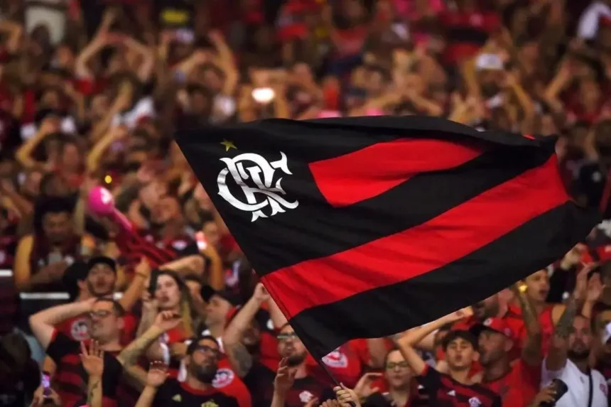
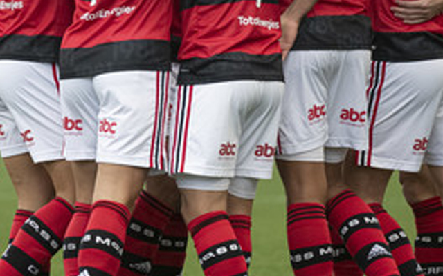

União
O time celebra como um só, reforçando o sentimento da Nação rubro-negra.
Faça o seu cadastro e tenha acesso a benefícios exclusivos dessa campanha rubro-negra. Entre na torcida e viva essa experiência com a ABC da Construção.
Quando o Flamengo celebra, a energia da Nação toma conta de tudo. Essa campanha transforma esse sentimento em uma experiência marcante, conectando torcedores, clientes e a força da ABC da Construção.
Uma imagem que traduz a força da torcida e a vibração rubro-negra.
Um convite para viver a campanha como parte da história do clube.
Um início de jornada que prende atenção e prepara o usuário para continuar.

Essa é a energia que conecta o Flamengo, a torcida e a parceria com a ABC da Construção. Uma celebração coletiva que traduz união, confiança e a força de estar lado a lado em cada conquista.
O time celebra como um só, reforçando o sentimento da Nação rubro-negra.
Uma imagem vibrante para transmitir energia, movimento e emoção real.
Torcida e clube compartilham a mesma vibração, fortalecendo a campanha.
A ABC da Construção está onde a obra acontece. Com estrutura, capilaridade e logística inteligente, a marca reforça sua presença no dia a dia de quem busca qualidade, atendimento e entrega de verdade.
Uma operação sólida para atender com agilidade e confiança.
Uma marca grande, com presença consistente e reconhecimento nacional.
Mais perto do cliente, da loja ao canteiro, com experiência completa.

A campanha traz oportunidades especiais para quem acompanha, se cadastra e quer aproveitar o melhor da ABC da Construção com benefícios pensados para o seu momento.
Condições especiais pensadas para quem faz parte da ativação.
Uma vitrine visual forte para despertar interesse e gerar ação.
Produtos, ofertas e vantagens alinhados com a experiência da campanha.

Quando a campanha ocupa esse espaço, ela não fala só de futebol. Fala de dimensão, presença e da força de uma marca que participa dos momentos que realmente importam para a torcida.
Uma cena ampla para transmitir a dimensão da parceria.
O jogo deixa de ser apenas jogo e vira experiência compartilhada.
O ambiente ajuda a criar lembrança afetiva e valor de marca.

É nessa fração de segundo que a emoção explode. A campanha usa esse clima para traduzir energia, velocidade e entrega — tudo que conecta futebol, torcida e construção de marca.
Uma imagem viva para mostrar potência e dinamismo.
O olhar vai direto para o momento decisivo da jogada.
O impacto visual reforça a entrega da parceria.
Aqui a campanha encontra seu lado mais humano e mais forte. A imagem da torcida reforça que essa experiência não é individual: ela é compartilhada, celebrada e lembrada por muita gente ao mesmo tempo.
Mostra que a energia da campanha é aceita, vivida e sentida pelo público.
Cria um senso de grupo que fortalece a identificação com o clube.
Converte o entusiasmo da arquibancada em valor para a marca.


Essa imagem aproxima a campanha do dia a dia. Ela mostra que a experiência não é só sobre clube ou produto, mas sobre os momentos compartilhados que tornam a relação com a marca mais leve, real e memorável.
Uma cena que conversa com a vida real e com a linguagem do público.
Menos institucional, mais humana, mais fácil de se identificar.
Momentos simples e verdadeiros têm mais chance de ficar na lembrança.
O patrocínio não aparece só como assinatura. Ele reforça a seriedade da parceria, mostra força de marca e ajuda o público a enxergar consistência no projeto como um todo.
Uma base institucional que aumenta a segurança da mensagem.
A presença da marca legitima a campanha e amplia sua força.
Tudo conversa entre si: emoção, valor e posicionamento de marca.
Criamos uma ativação moderna para aproximar torcedores e clientes da rede ABC da Construção, unindo paixão, experiência e benefícios exclusivos em uma jornada feita para quem sente orgulho de vestir o vermelho e preto.
Uma campanha com alma rubro-negra, feita para emocionar desde o primeiro scroll.
Ofertas e vantagens pensadas para quem quer aproveitar mais da ABC da Construção.
Uma narrativa visual forte para transformar interesse em conexão real com a marca.

Cada benefício foi desenhado para gerar valor real, fortalecer o vínculo com a campanha e mostrar que a parceria entre Flamengo e ABC da Construção entrega muito mais do que comunicação.
Condições especiais e ações promocionais para quem participa da ativação.
Mais informações, novidades e comunicação pensada para a Nação rubro-negra.
Experiência conectada à realidade do cliente, com a força da rede ABC da Construção.
A ABC da Construção é uma construtech com história, escala e presença nacional. Ao longo das décadas, a marca cresceu, modernizou sua operação e consolidou sua posição como uma das maiores referências em acabamentos do Brasil.
Anos de atuação
Guide shops
Produtos
Uma empresa que conecta tecnologia, atendimento e soluções completas para obras e reformas.
Entregar mais agilidade, segurança e precisão para quem quer construir ou renovar com confiança.
Reunimos aqui as perguntas mais importantes sobre a parceria, a campanha e os benefícios, para deixar tudo transparente e direto.
A parceria entre Flamengo e ABC da Construção foi renovada oficialmente para a temporada 2024, mantendo a força institucional entre as marcas e ampliando as ativações para o público.
Ao se cadastrar, você passa a receber novidades, campanhas especiais, benefícios exclusivos e comunicações pensadas para torcedores e clientes da ABC da Construção.
Não. A campanha foi desenhada para torcedores e também para clientes que valorizam qualidade, experiência e oportunidades na ABC da Construção.
A ABC da Construção conta com ampla presença nacional, com Guide Shops e pontos de atendimento distribuídos em diversos estados.
Preencha em 3 etapas e receba ofertas, novidades e experiências feitas para quem torce pelo Flamengo e gosta de construir com a ABC da Construção.
Campos organizados por lógica para uma experiência leve e rápida.
Conversa primeiro com o cliente, depois com a loja, e por fim com o coração rubro-negro.
O card final transforma o envio em um encerramento bonito e marcante.